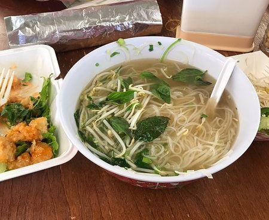
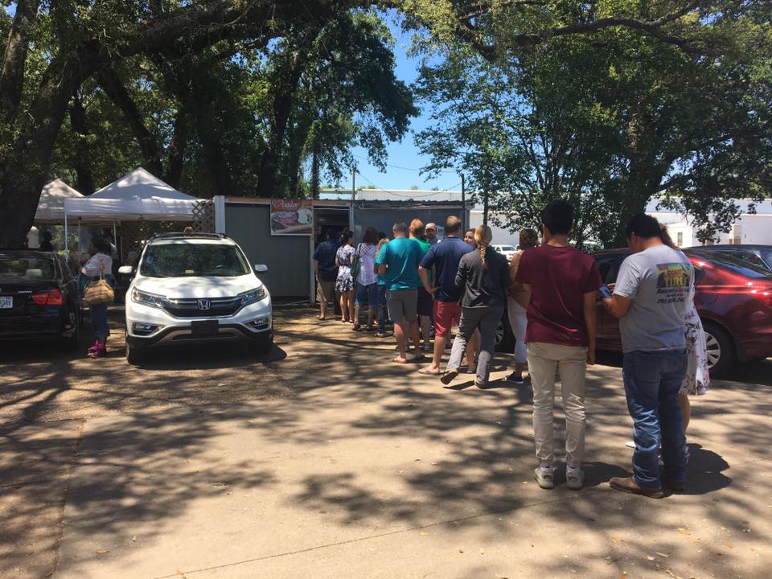
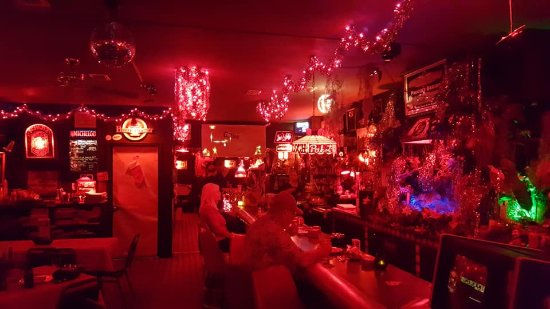

Saigon Oriental Market and Deli

Saigon is a local Asian market and deli located on the corner of Pace and Cervantes. While unassuming from the exterior, Saigon serves some of the best pho and bahn mis in the city, and they offer plenty of fresh groceries and snacks imported from across Asia.
To learn more, visit their Facebook page.
Taqueria El Asador

Taqueria El Asador was recently said to be one of the best taco places in not only Florida, but the whole country - and its easy to see why. No frills, all flavor, El Asador serves up street tacos, huge burritos, and lunch plates that'll leave you more satisfied than Taco Bell ever could.
To learn more, visit their Facebook page.
The Elbow Room

Only a short walk away from Saigon, The Elbow Room has been a Pensacola staple for years. Its red lighting and kitschy, cozy atmosphere hides delicious pizza, soups and sandwiches, as well as a huge selection of craft beers and wines.
To learn more, visit their Facebook page.